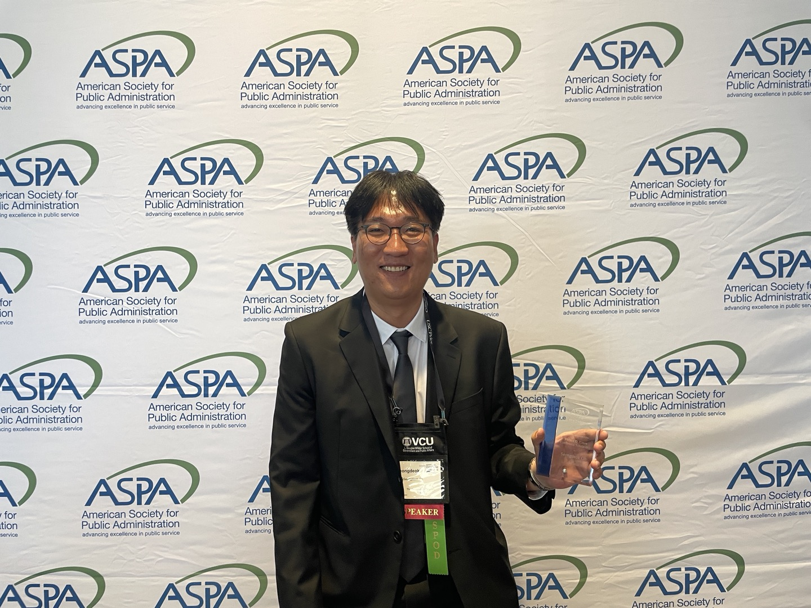

Media
Academic Conferences
“Linking the Dynamics of Inclusive Leadership: Exploring the Role of Psychological Safety and Work Engagement in Innovative Work Behavior” - Seongdeok Oh
American Society for Public Administration (ASPA) 2025 Annual Conference, March 29, in Washington, DC.


“Linking the Dynamics of Inclusive Leadership: Unveiling the Interplay Between Psychological Safety, Work Engagement, and Innovative Work Behavior.” - Seongdeok Oh
Southeastern Conference for Public Administration (SECoPA) 2024 Annual Conference, September 20, in Memphis, Tennessee.
-01.jpeg)
-02.jpeg)
-01.jpeg)
-01.jpeg)
“Fostering Innovative Work Behavior to Improve Organizational Performance: The Role of Public Service Motivation and Innovative Organizational Culture.” - Seongdeok Oh and Meghna Sabharwal
Academy of Management (AOM) Annual Meeting 2024, August 12, in Chicago, Illinois.
.jpeg)
.jpeg)
.jpeg)
.jpeg)
“Transformational Leadership, Autonomy, and Organizational Culture: A Model for Workplace Innovation and Innovative Work Behavior.” - Seongdeok Oh and Meghna Sabharwal
The Public Management Research Conference (PMRC) 2024, June 27, in Seattle, Washington.


“Fostering Innovation at Work: The Synergy of Transformational Leadership, Job Autonomy, and Innovative Organizational Culture for Driving Innovative Work Behavior.” - Seongdeok Oh and Meghna Sabharwal
American Society for Public Administration (ASPA) 2024 Annual Conference, April 15, in Minneapolis, Minnesota.

“Fostering Innovative Work Behavior to Improve Organizational Performance: The Role of Public Service Motivation and Innovative Organizational Culture” - Seongdeok Oh and Meghna Sabharwal
- Southeastern Conference for Public Administration (SECoPA) 2023 Annual Conference, September 29, in Atlanta.
“The Othering Experience: A historical analysis of racism experienced by Asian American in the USA” - Meghna Sabharwal, Aurora M. Becerra, and Seongdeok Oh
- Conference of Minority Public Administration (COMPA) 2022 Virtual Conference, March 3, virtually in New Orleans. (Won the Best Paper Award (2nd) of 2022)
Community Engagement
Volunteer, The 8th Annual Public and Nonprofit Management Conference, The University of Texas at Dallas, in Toyota Stadium Frisco, Texas.
- Volunteered for event setup, guiding support, and session assistance.

Representative and Member, Citizen Participation Group, Ministry of Science and ICT.
As a member of citizen participation group in Ministry of Science and ICT, participated in activities for “establishment of mid-to long-term investment strategies of the government.”
Participated as a representative of the citizen participation group in the government’s R&D mid-to long term investment strategies discussion meeting and presented the topic of “government R&D investment strategy and citizen participation.” (Nov. 28, 2018)
Attended the 2020 government R&D investment direction and standard(plan) public hearing as representatives of the citizen participation group to present and discuss “the 2020 government R&D direction and standards from the citizen perspective.” (Feb. 26, 2019)